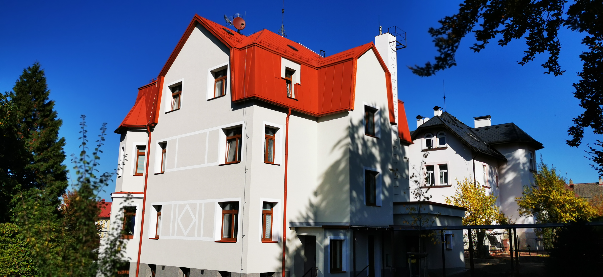
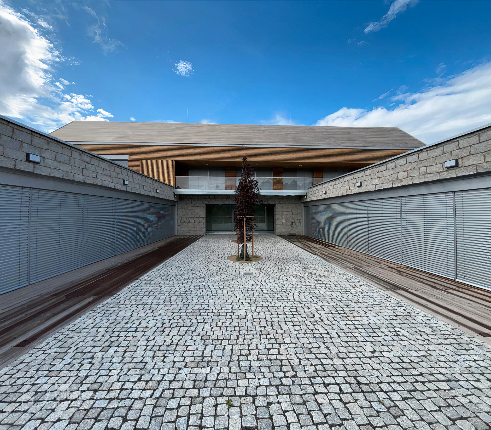

Centrum denních služeb

Ambulantní služba
Služba je poskytována v pracovní dny od 6,30 hod. do 19,00 hod
Místo poskytování sociální služby:
Zeyerova 832/24,
460 01 Liberec 1
Služba je poskytována v pracovní dny od 6,30 hod. do 19,00 hod
Místo poskytování sociální služby:
Zeyerova 832/24,
460 01 Liberec 1


Poslání
Centrum denních služeb poskytuje sociální službu osobám s
mentálním postižením a poruchami autistického spektra.
Posláním Centra je prostřednictvím nabízených pracovních
činností, volnočasových a zájmových aktivit předcházet
sociálnímu vyloučení, upevňovat získané dovednosti a návyky,
rozvíjet samostatnost každého uživatele.
Spolupracujeme se
ZŠ speciální, odloučené pracoviště Liberec.

.png)
Naše sociální služby jsou finančně podporovány z rozpočtu
Libereckého kraje
Libereckého kraje

Podpořeno z fondu solidarity EU - náprava
povodňových škod
povodňových škod

Transformace DOZP je podpořena z projektu
č. CZ.1.04/3.1.03/87.00022
č. CZ.1.04/3.1.03/87.00022
Made with ♥ by Hakkku